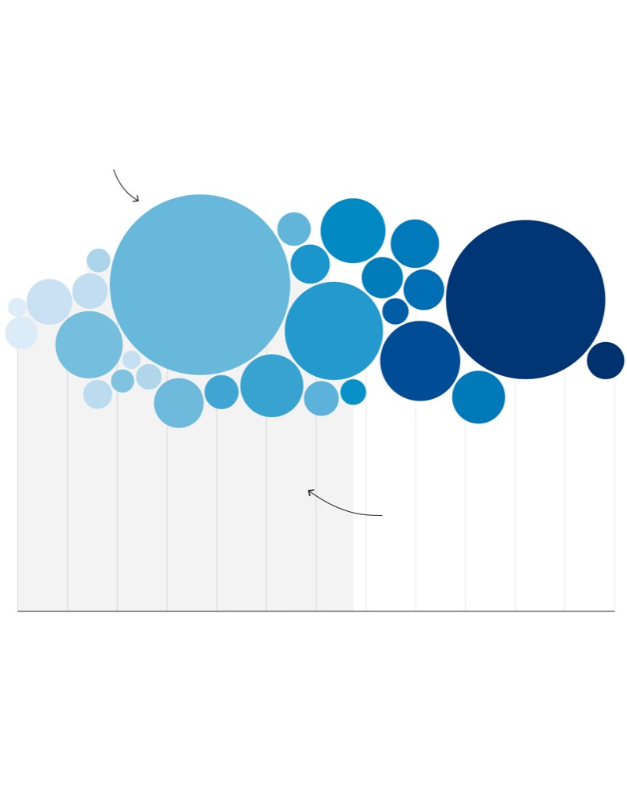
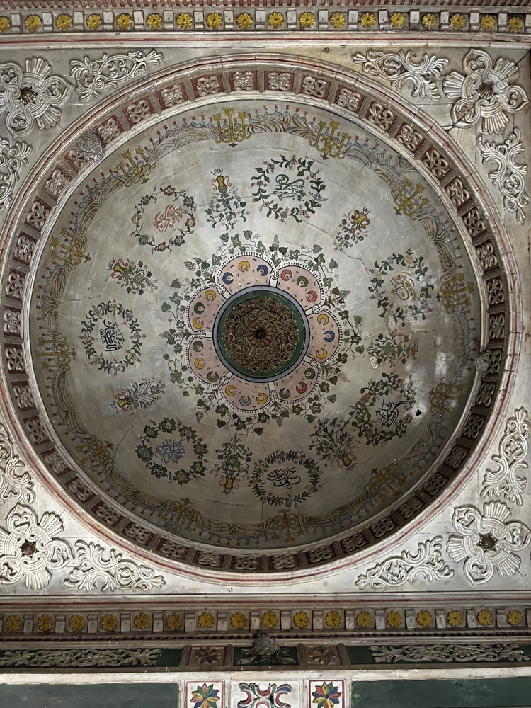

Iryna
Humenyuk
Writer, editor and designer. Data journalism, editorial and visual storytelling. Columbia Journalism × Waterloo Architecture. Based in San Francisco.
Scroll sideways
Is AI Stealing Jobs?
A self-directed data explainer testing the most repeated claim in the labour debate against the official numbers.
Working from the Bureau of Labor Statistics Occupational Employment and Wage Statistics release, the piece tracks thirty occupations expected to be most exposed to artificial intelligence and compares a decade of employment change, 2014 to 2024, against the fourteen per cent national average.
The finding runs against the headline: most of the professions in decline are small ones. The largest collapse sits in food service, some four hundred and twenty thousand jobs short of where growth would have put it — a sector nobody blames on automation. White-collar employment has been flat since 2009 even as the number of graduates climbed.
The reporting rests on interviews as much as on the spreadsheet: Jeremy Merrill of The Washington Post, David Marguerite of LISER on automation versus augmentation, Richard Sylla of New York University, and David Autor of MIT by email. The story is less about machines replacing people than about oversupply, offshoring, and a labour market that stopped absorbing graduates fifteen years ago.

A Tale of Two Mosques
How one Orthodox-majority government oppresses Islam.
Reported from Batumi, Adjara and Samtskhe-Javakheti for a Columbia thesis, the piece follows two people. Tamar Gelashvili, a documentary filmmaker campaigning to preserve historic mosques, is coerced into informing by the secret police after being threatened at gunpoint. Tariel Nakaidze spends a decade seeking a permit for a second mosque in Batumi, gathering more than twelve thousand signatures and being refused anyway.
The argument is made partly in photographs: painted domes and plaster ceilings in buildings the state declines to protect.


San Francisco's $16 Billion
The city budget, made legible.
San Francisco publishes a budget of roughly sixteen billion dollars in a form almost nobody can read. Co-produced with the team at Mission Local, this analysis took the published documents apart and rebuilt them into something a reader could follow: where the money goes, which departments grow, and what changes year over year.
The reporting sits on public documents rather than on a source's characterisation of them, which is the part that transfers: find the filing, build the dataset, check it, then find the story inside it.
Dog Licences, Block by Block
A neighbourhood-level map of who registers their dog, and who does not.
Licensing data is the kind of municipal record that exists to be filed and forgotten. Mapped at neighbourhood level in Python and GeoPandas and drawn in Datawrapper, it turns into a portrait of a city: which blocks comply, which do not, and how that tracks against everything else about them.
The interest is not in dogs. It is in what a mundane dataset reveals once it is put on a map.
People We Meet
Alongside the data work at Mission Local: breaking news, community events and neighbourhood profiles. Spot reporting on a Tenderloin affordable-housing fire; scene coverage of the Sisters of Perpetual Indulgence and their annual Hunky Jesus competition; and character-driven profiles for the paper's People We Meet column.
The same instinct underlies both halves of the job. A budget line and a stranger on Mission Street are each a way of describing the same city.
The Lede Program
Columbia's data journalism certificate, completed in 2025 on a merit scholarship. Python, Pandas and GeoPandas; scraping with BeautifulSoup; visualisation in Datawrapper, RAWGraphs, D3 and ai2html.
Project work covered political trend data, employment collapse and New York climate records — the training that turned a reporter who could write into one who could also count.
Uptown Radio
Ten-plus broadcast stories pitched and produced in a single semester, in narrative news format: the exploitation of migrant workers by food delivery apps, Columbia University's privatisation of its green space, and Soviet Jewish identity in the shadow of the full-scale invasion of Ukraine.
Radio teaches compression. Ninety seconds is not a constraint on the reporting; it is the reporting.
Press Freedom
As a Russia researcher for the Committee to Protect Journalists' Europe and Central Asia programme, work on press-freedom violations inside Russia. Findings and sources remain confidential.
Earlier, in Kyiv, co-editing the English-language edition of The Ukrainians, the country's largest literary journalism magazine — editing and translating copy on Crimean oppression, German policy toward Ukraine, and the Putin–Trump relationship.
On the Built Environment
Forty-plus articles for Frame in Amsterdam on the sustainability and public-policy dimensions of architecture: why genuinely sustainable pavilions are so hard to build, how the experience economy pushed hostels toward boutique design, and the difficulty of preserving heritage buildings across Europe.
Further bylines in Azure and The Architect's Newspaper. A degree in architecture from Waterloo underneath all of it, which is mostly useful now as a way of explaining things visually.

Colophon
Selected work, most recent first. Full clip archive on LinkedIn and at the portfolio site; published pieces live with their original publishers and are linked rather than reproduced here.
Set in Helvetica. Built as a single static page, no framework, no tracking. Charts made in RAWGraphs, Datawrapper and D3; maps in GeoPandas and QGIS.